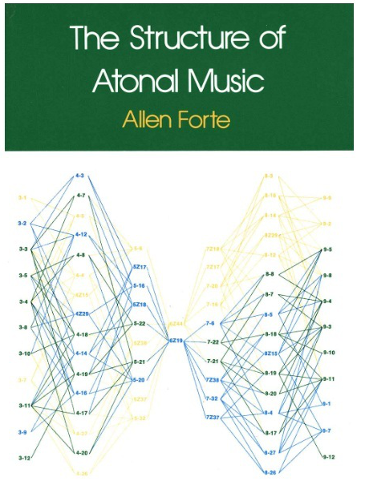
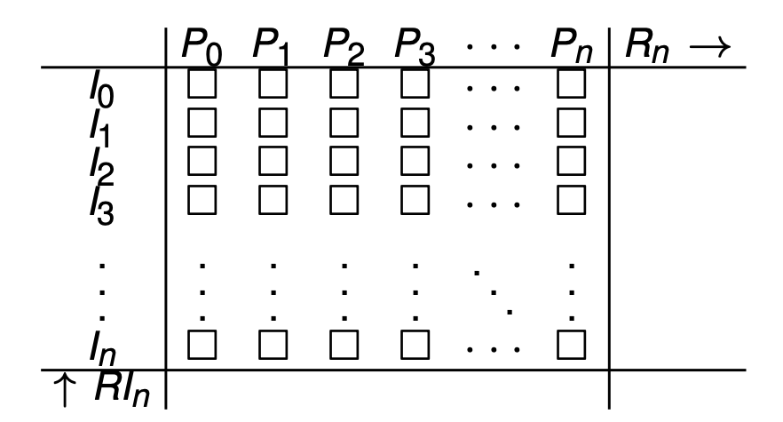
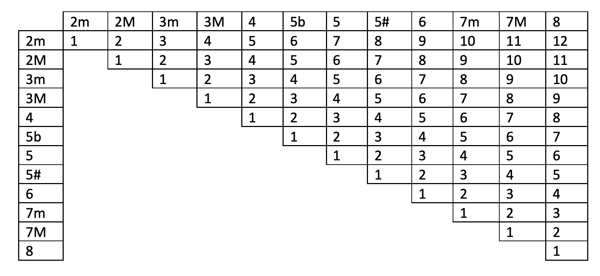
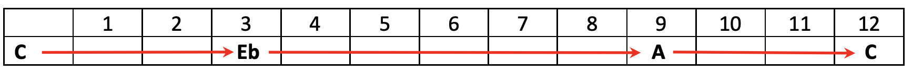
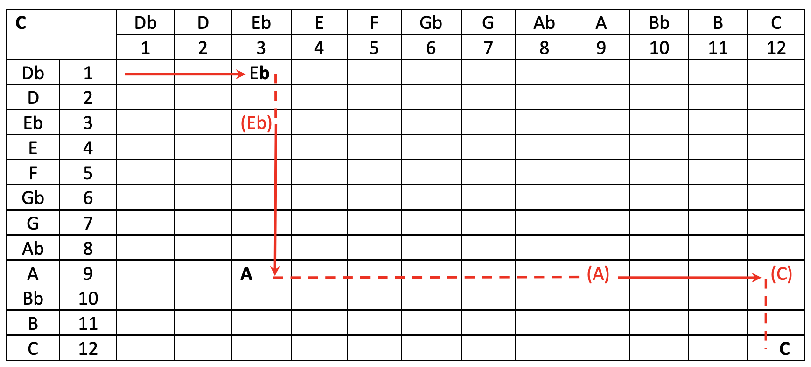
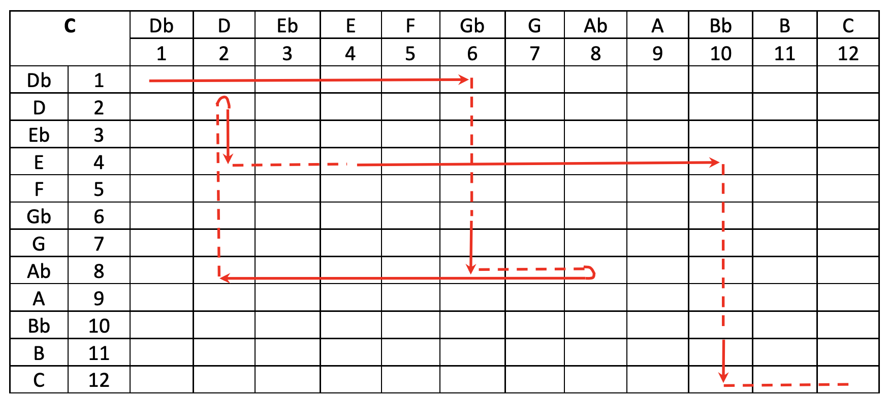

From Interval Matrix to Score: GeCo-Tool
a Generative Compositional Framework
Marco Bittelli — University of Bologna
Roberto Olmi — National Research Council
1. Introduction
- The interval matrix has traditionally served as a descriptive framework for intervallic relations within pitch collections.
- In post-tonal theory, intervallic content is examined independently from tonal function.
- Atonal music lacks a functional tonal center and conventional harmonic hierarchy.
- Pitch organization emerges through:
- Symmetry
- Motivic development
- Intervallic consistency
2. Historical background: The Second Viennese School
- Schoenberg systematized the equal treatment of pitch classes through the twelve-tone method.
- Schoenberg proposed the “emancipation of dissonance.”
- Traditional distinctions between consonance and dissonance dissolve.
- All intervals acquire equal structural importance.
- Webern developed highly condensed intervallic structures.
- Berg combined serial procedures with expressive gestures.
- The interval matrix becomes a natural analytical counterpart to these compositional techniques.
3. Historical Antecedents
- Debussy weakened tonal hierarchy through:
- Parallelism
- Modal harmony
- Non-traditional scales
- Bartók explored:
- Symmetry
- Axis systems
- Interval cycles
- Stravinsky and Scriabin emphasized intervallic collections over tonal centers.
4. Jazz and Intervallic Organization
- Jazz harmony progressively weakened tonal functionality.
- Duke Ellington and Thelonious Monk expanded harmonic vocabulary through:
- Altered dominants
- Extended harmonies
- Unconventional voice leading
- John Coltrane explored:
- Symmetrical octave divisions
- Cyclic intervallic patterns
- Free jazz abandoned predetermined harmonic progressions.
- Musical organization emerged through:
- Improvisation
- Gesture interaction
- Timbral contrasts
- Dynamic intervallic configurations
- Major figures:
- Ornette Coleman
- Cecil Taylor
- Albert Ayler
5. The Problem of Analysing the New Music
- Early twentieth-century composers progressively abandoned traditional tonality.
- Conventional analytical tools based on:
- Functional harmony
- Tonal cadences
- Modulation became insufficient.
- Composers such as:
- Debussy
- Schoenberg
- Bartók
- Stravinsky
- Music theorists searched for new analytical models capable of describing unordered pitch structures.
6. Early Analytical Approaches
- Arnold Schoenberg emphasized the importance of the Grundgestalt.
- A basic motivic cell
- Transformed throughout a composition
- Analysts increasingly focused on:
- Symmetry
- Intervallic recurrence
- Motivic transformatio
- Anton Webern’s music revealed highly compressed intervallic structures.
- Béla Bartók explored:
- Axis systems
- Inversional symmetry
- Cyclic interval patterns
- These developments prepared the ground for a more formalized theoretical system.
7. From Early Analysis to Forte
- Conventional analytical tools based on:
- Functional harmony
- Tonal cadences
- Modulation
became insufficient.
- Analysts increasingly focused on:
- Intervallic recurrence
- Symmetry
- Motivic transformation
- Allen Forte formalized these ideas through:
- Pitch-class sets
- Prime forms
- Interval vectors

Allen Forte, The Structure of Atonal Music (1973)
8. Interval Matrix and Atonality
- The interval matrix reveals:
- Distribution of interval classes
- Frequency of intervals within pitch-class sets
- Intervals become structural identities rather than tonal functions.
- Structural coherence arises through:
- Recurrence
- Transformation
- Symmetry
- Central composers:
- Arnold Schoenberg
- Anton Webern
- Alban Berg
9. Computational Musicology
- Computational systems increasingly use interval-based representations.
- Applications include:
- Symbolic music processing
- Pitch-class analysis
- Generative composition
- Tools and environments:
- music21
- PC-Set Calculator
- TOTAMUSICA
- Rubato Composer
- Opusmodus
- MUSIC𝄞NTWRK
10. Limitations of Existing Tools
- Many computational tools require advanced mathematics and programming knowledge.
- Such requirements are often absent in conservatory education.
- This study shifts the interval matrix from static analytical taxonomy to a generative transformational system.
- The framework generates pitch structures through ordered interval-leap rules.
- Implemented as a web-based application.
11. The Twelve-Tone Matrix
Transformations:
- P: Prime
- R: Retrograde
- I: Inversion
- RI: Retrograde Inversion
Left → Right: Pn = P0...P11
Right → Left: Rn = R0...R11
Top → Bottom: In = I0...I11
Bottom → Top: RIn = RI0...RI11
Rows: Pn/Rn
Columns: In/RIn

12. The Interval Matrix

The interval matrix in this study refers to a 12-rank symmetric matrix containing all interval relationships between the 12 notes of the chromatic scale.
Each cell represents the distance in semitones between two notes.
The matrix can be interpreted as a matrix of transition intervals useful for identifying paths within melodic sequences.
13. Interval Matrix
- The interval matrix represents intervallic relations within pitch collections.
- Applicable in tonal and atonal contexts.
- In post-tonal theory, intervallic content is independent of tonal function (Forte, 1973).
- Focus on structural properties:
- Pitch-class set classification
- Symmetry
- Interval-class distribution
14. Interval Matrix and Computational Musicology
- Transformationaltheory: intervalsasoperationsbetween musical objects (Lewin, 1987).
- Structure emerges from networks of transformations.
- Compositional use: intervallic processes as generative tools (Morris, 1987).
- In computational musicology:
- interval-based representations
- transposition-invariant models (Lattner, 2018)
- music21supports:
- transformation
- generation
- visualization of pitch structures (Cuthbert, 2010)
15. Encoding a Pitch Sequence
- Example: C E♭ A C
- Assign 0 to the first note: 0 3 9 0
- Representation as:
- absolute interval distances
- relative distances (between consecutive notes)
- Relative intervals: 0 3 6 3
- Interpretable as a one-dimensional interval vector.

One-dimensional intervallic pattern
16. Interval–Leap Representation
- Distinction:
- I: interval (horizontal motion)
- J: leap (vertical motion)
- Notation:
C (I3) E♭ (J6) A (I3) C - Interpretation:
- Minor third up
- Tritone
- Minor third
- Intervals correspond to horizontal paths; leaps to vertical paths (in the matrix).

17. Beyond One-Dimensional Representation
- Example hexatonic ordering:
C G♭ A♭ D E B♭ C - Interval–leap notation:
I6 J2 I6 J2 I6 J2 - The resulting structure defines a path in the interval matrix.

C G♭ A♭ D E B♭ C path in the interval matrix
18. Interval Operators
- Operators:
- Iₙ: transposition by n semitones
- Jₘ: transposition by m semitones
- Example:
- I6(C) = G♭
- J2(G♭) = A♭
- Recursive process:
C → G♭ → A♭ → D → E → B♭ → C - Closed cycle obtained by iteration
19. Compact Transformational Notation
- Iterative process written as:
- Meaning:
- Apply In then Jm
- Repeat N times, with N such to generate the starting note
- Extensions:
- Binary transformation: (InJm)N
- Quaternary transformation: (InJmIpJq)N
- From static sets → dynamic paths
- Paths can be negative (descending intervals ore leaps)
20. Higher-Order Transformational Systems
- Binary systems: \((I_nJ_m)^N\)
- Ternary systems: \((I_nI_mI_k)^N\)
- Quaternary systems: \((I_nJ_mI_pJ_q)^N\)
- Senary systems: \((I_{n1}1I_{n2}I_{n3}I_{n4}I_{n5}I_{n6})^N\)
21. Generalization to Multidimensional Spaces
We can look at binary and ternary transformations as operations in two-dimensional (2D) and three-dimensional (3D) interval spaces. Their application to a pitch-class X results in a sequence terminating on X itself (circular, or “closure” condition):
- 2D
\(\Large (I_nJ_m)^N(X) \rightarrow X\) - 3D
\(\Large (I_nJ_mK_p)^N(X) \rightarrow X\)
The extension to N-dimensional interval spaces:
\[ \left(\prod_{{i=1}}^K I_{{n_i}}\right)^N(X) \rightarrow X \]This framework enables generation of arbitrary scales and twelve-tone structures.
22. Transformational Orbit Structures
- Binary systems generate highly symmetrical orbit structures.
- Ternary systems introduce asymmetric intervallic permutations.
- Senary systems generate dense transformational networks spanning the chromatic aggregate.
- Paths may include:
- ascending intervals
- descending intervals
- negative transformations
- non-linear cyclic returns
- Transformational notation shifts analysis from static pitch collections to dynamic intervallic trajectories
23. Interval Symmetry and Cycles
| Binary Rule | Resulting Collection | Orbit Size |
|---|---|---|
| (I1, J1) | Full chromatic cycle | 12 |
| (I2, J2) | Whole-tone collection | 6 |
| (I3, J3) | Symmetric subset | 4 |
| (I4, J4) | Augmented triad cycle | 3 |
| (I6, J6) | Tritone | 2 |
Examples of orbit cardinalities generated by binary rules
24. Symmetry in Harmonic Practice
- Coltrane changes follow cycles of major thirds.
- Example:
\[B \rightarrow G \rightarrow E^\flat \rightarrow B\]
- Corresponds to the pitch-class set
{0,4,8}
- Interpretation:
- Harmonic motion as cyclic trajectory
- Interval matrix as space of transformations
25. Pat Martino and Symmetrical Guitar Structures
- In The Nature of Guitar, Pat Martino conceives the fretboard as a geometric system based on intervallic symmetry and movable forms.
- Harmonic structures emerge through cyclic transformations ofintervallic cells distributed across the neck.
- His approach emphasizes:
- Symmetrical fingering patterns
- Cyclic intervallic motion
- Transformational equivalence
- These concepts relate directly to binary orbit structures:
- (I2 , J2 ) ⇒ whole-tone collection
- (I4 , J4 ) ⇒ augmented cycle
- (I6 , J6 ) ⇒ tritone polarity
- The fretboard becomes a topological space where intervallic orbits organize melodic and harmonic navigation.
26. Rhythmic Transformations
- Rhythmic transformations modify only durations:
Pitch fixed ; Rhythm transformed
- They represent the temporal analogue of pitch-class transformations.
- Four operations are implemented in GeCo-Tool
| Symbol | Operation | Function |
|---|---|---|
| S+ | Shift forward | Cyclic advancement |
| S− | Shift backward | Cyclic retardation |
| I | Rhythmic inversion | Long ↔ short |
| R | Retrograde | Temporal reversal |
- Rhythm becomes an autonomous transformational domain.
27. Cyclic Rhythmic Shifts
- Shift operations cyclically reorganize durations.
- Forward shift: \[\Large S^+(d_1,d_2,\dots,d_n)\]
- Backward shift: \[\Large S^-(d_1,d_2,\dots,d_n)\]
- These operations preserve rhythmic material while changing:
- Metric emphasis
- Temporal perception
- Accent distribution
The last durations move to the beginning of the sequence.
The first durations move to the end of the sequence.
28. Rhythmic Inversion and Retrograde
- Rhythmic inversion maps duration hierarchies symmetrically:
long ⇆ short
- Example:
(whole, quarter, eighth) → (eighth, quarter, whole)
- Rhythmic retrograde reverses temporal order:
\[\Large (d_1,d_2,\dots,d_n) \rightarrow (d_n,\dots,d_2,d_1)\]
- These transformations generate:
- Temporal symmetry
- Recursive rhythmic structures
- Non-linear periodicity
29. Harmonization Strategies
- Harmonization is not conceived in a traditional tonal sense:
no functional tonality; no tertian hierarchy
- The approach focuses on quaternary structures generated by transformational sequences.
- Three harmonization models are implemented in GeCo-Tool:
| Method | Principle | Character |
|---|---|---|
| On-the-beat | Odd-note bichords | More consonant |
| Off-the-beat | Even-note bichords | Jazzy / anticipatory |
| Tetradic | Four-note segmentation | Vertical structures |
- The first two methods derive from the span process:
- harmonic voice skips one melodic note
- parallel dyadic structures emerge
- melodic points become emphasized
- These approaches resemble Weberns discontinuous vertical writing.
30. Transformational Harmonization
- In Webern-like harmonization, bichords illuminate the melodic line intermittently.
- Harmony does not accompany functionally:
verticality → projection of the line
acts as projection of the melodic line rather than tonal accompaniment.
- The harmonic layer continuously redefines intervallic context.
- Tetradic harmonization follows a segmentation principle:
- melodic cells generate vertical structures
- four-note groups become tetrachords
- Harmonization therefore emerges from transformational relations rather than tonal syntax.
31. GeCo-Tool: Generative Interval Matrix
- GeCo-Tool is a web application for generating musical sequences derived from interval matrices, analogous to the twelve-tone matrix in serial composition.
- The app generates cyclic pitch structures from:
- Starting pitch-class
- Interval sequence
- Rhythmic mode
- Sequences evolve until recovery of the initial pitch-class. \[\Large p_n \equiv p_0 \pmod{{12}}\]
- Five structural models are implemented:
| Type | Structure | Character |
|---|---|---|
| Binary | interval + leap | Symmetric cycles |
| Ternary | 3 intervals | Hybrid contours |
| Quaternary | 2 interval pairs | Extended periodicity |
| Senary | 3 interval pairs | Dense orbit networks |
| Multidimensional | any number of intervals | Any possible orbit |
- The app dynamically generates:
- MIDI sequences
- MusicXML notation
32. Transformational Operations
- GeCo-Tool applies pitch-class transformations derived from serial and post-tonal theory.
- Pitch transformations
| Operation | Symbol | Function |
|---|---|---|
| Transpose | T | Shift by semitones |
| Inversion | I | Interval reflection |
| Retrograde | R | Reverse order |
| Retrograde-Inversion | RI | Combined transformation |
- Rhythmic transformations operate independently from pitch:
- Rhythmic retrograde
- Rhythmic inversion
- Cyclic duration shifts
- ransformations may be chained recursively: \[R(T(I(X)))\]
- The system therefore models:
- Dynamic intervallic trajectories
- Recursive orbit structures
- Time-domain symmetries
33. Computational and Musical Framework
- GeCo-Tool integrates computational generation with transformational music theory.
- Main musical features:
- Harmonic accompaniment
- Octave limitation
- Treble/Bass clef rendering
- MIDI import/export
- Typical worflow:
- Define interval generators
- Generate cyclic sequence
- Apply transformations
- Explore rhythmic and harmonic variants
- Export MIDI or score
The platform connects:
algorithmic composition → transformational theory → interactive musical practice
34. GeCo-Tool Web Application
- Publicly accessible online.
- Supports interactive exploration of intervallic orbit structures and cyclic transformational systems.
- Users can generate sequences in real time, visualize scores dynamically, listen to MIDI playback, and export materials.
URLs:
https://marcobittelli.it under the section Music
https://murosigma.it/rob/GeCo-Tool.html